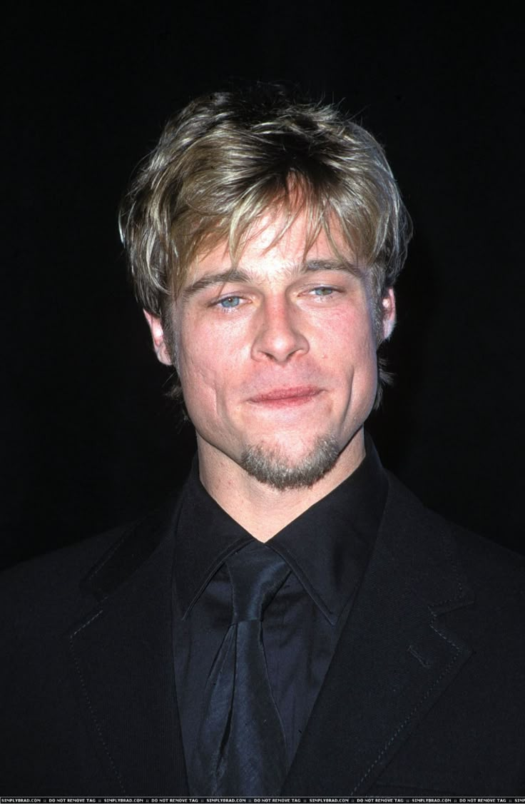

Saya percaya teknologi
dan kreativitas adalah
fondasi karya yang baik.

Dari penasaran
menjadi profesi.
Saya adalah seorang pelajar yang memiliki minat besar pada pengembangan web, desain antarmuka, fotografi, serta produksi konten visual. Ketertarikan tersebut mendorong saya untuk terus mempelajari HTML, CSS, JavaScript, UI/UX Design, photo editing, dan video editing guna menghasilkan karya yang tidak hanya menarik secara visual, tetapi juga memberikan pengalaman pengguna yang optimal.
Selain pengembangan web, saya juga mendalami optimasi sistem komputer dan modifikasi Android, mulai dari custom ROM, custom kernel, rooting, hingga tuning performa perangkat. Di bidang kreatif, saya menikmati proses mengabadikan momen melalui fotografi dan mengolahnya menjadi foto maupun video yang memiliki kualitas visual tinggi.
Saya percaya bahwa perpaduan antara teknologi, kreativitas, dan perhatian terhadap detail merupakan fondasi untuk menghasilkan karya yang profesional. Setiap proyek menjadi kesempatan untuk terus berkembang, mempelajari teknologi baru, dan meningkatkan kualitas hasil yang saya buat.
Tiga hal yang saya
pegang dalam setiap proyek.
Detail bukan opsional
Mengutamakan kualitas dan perhatian terhadap detail di setiap karya yang saya buat, baik di kode maupun visual.
Selalu mengikuti tren
Terus belajar serta mengikuti perkembangan teknologi dan tren desain agar hasil kerja tetap relevan.
Berorientasi pengalaman
Setiap keputusan desain dan kode berorientasi pada pengalaman pengguna dan hasil yang fungsional.
Di luar layar kerja.
Hal-hal yang menjaga perspektif saya tetap segar.
- 01Frontend Web Development
- 02UI/UX Design
- 03Photography
- 04Photo Editing
- 05Video Editing
- 06Android Customization
- 07PC Optimization
- 08Branding & Visual Design
- 09Artificial Intelligence
- 10Gaming
Mari berkenalan
lebih jauh.
Saya selalu terbuka untuk percakapan baru.